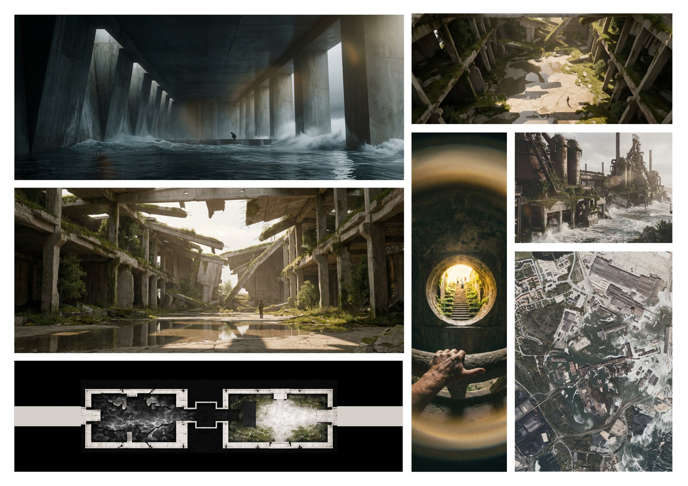

Emotional Museum approaches the museum less as a container for objects than as a sequence of emotional states — moving the visitor through darkness, decay, threshold, and a final shaft of light. The study assembles atmosphere first: low corridors, weathered surfaces, and a single golden aperture that organizes the entire procession around the moment of release.
《情绪博物馆》将博物馆视为一系列情绪状态的序列，而非陈列物件的容器——让观者穿行于黑暗、衰败、门槛，最终抵达一束光。研究以氛围为先：低矮的廊道、被时间侵蚀的表面，以及一处金色的孔洞，整段流线都围绕"释放"的瞬间而组织。
